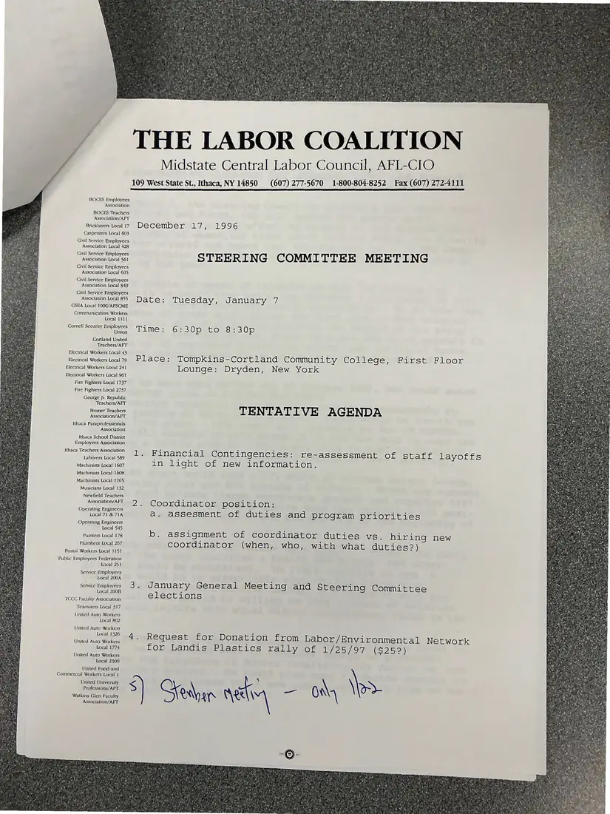

Agenda, 1 page
Steering Committee meeting agenda, January 7 [1997]
Dated December 17, 1996 (meeting January 7, 1997)
A tentative agenda, dated December 17, 1996, covering financial contingencies and staff layoffs in light of new information, the coordinator position, January elections, and a request for a donation to a Landis Plastics rally.
Download or cite this itemPages


(open zoom view)Read the page text (machine-read, contains errors)
This text was generated automatically from the photograph and has not been corrected. The image is the authoritative record.
THE LABOR COALITION Midstate Central Labor Council, AFL-CIO 109 West State St., Ithaca, NY 14850 (607) 277-5670 1-800-804-8252 Fax (607) 272-4111 BOCES Employees Association BOCES Teachers Association/AFT Bricklayers local 17 December 17, 1996 Carpenters Local 603 Civil Service Employees Association Local 428 hasscailon Ina SS STEERING COMMITTEE MEETING Civil Service Employees Association Local 605 Civil Service Employees Association Local 849 Civil Service Employees Association Local 855 DaQte: Tuesday , January W CSEA Local 1000/AFSCME Communication Workers Local 1111 Cornell Security Employees item Lats Ge sOjo tO Ee ZOjo Cortland United Teachers/AFT Electrical Workers Local 43 Electrical Workers local79 Place: Tompkins-Cortland Community College, First Floor Electrical Workers Local 241 Lounge: Dryden, New York Electrical Workers Local 961 Fire Fighters Local 1737 Fire Fighters Local 2737 George Jr. Republic Teachers/AFT Homer Teachers TENTAT It VE AGENDA Association/AFT Ithaca Paraprofessionals Association Ithaca School District Employees Association Ithaca Teachers Association Labores local 569 4 ~FNancial Contingencies: re-assessment of staff layoffs Machinists Local 1607 in light of new information. Machinists Local 1608 Machinists Local 1765 Musicians Local 132 Newfield Teachers pa A, Coyoprcliliaicrore joleysliealfeya ° Operating Engineers Local 71 & 71A a. assesment of duties and program priorities Operating Engineers Local 545 . ’ fi . fe Panes eeluge b. assignment of coordinator duties vs. hiring new Plumbers Local 267 coordinator (when, who, with what duties?) Postal Workers Local 1151 Public Employees Federation Local 251 Service Employees Local 200A Service Employees 3. January General Meeting and Steering Committee Local 200B elections TCCC Faculty Association Teamsters Local 317 United Auto Workers Local 802 United Auto Workers Local 1326 inne Aue Wei, Moe CUCS EM foreDonatelonwr com Labor/Environmental Network Local 1774 for Landis Plastics rally of 1/25/97 (S2)52)) United Auto Workers Local 2300 United Food and Commercial Workers Local 1 “5S 8) Sedan gate, — oh lps Association/AFT
See something wrong, or recognize a person or event? Send a correction. If you hold rights in this item or think it should not be public, write to the same address.